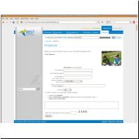
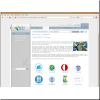
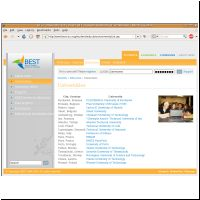
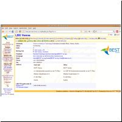
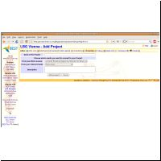
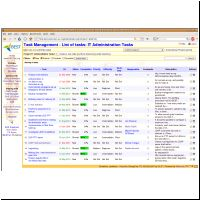
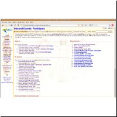
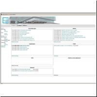
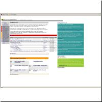
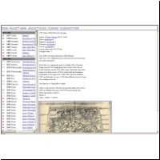

Makumba applications showcases
This page shows just a few examples of web applications that are using the Makumba JSP tag library.
- BEST Public Website
- BEST Intranet - Private Area
- Project Online Communicator
- SvenskWebb
- Map Collection
BEST Public Website
BEST - Board of European Students of Technology is a European student organisation located in over 70 universities in 30 European countries.
The public website found at www.BEST.eu.org includes a vast application system serving tens of thousands students is running on Makumba technology.



And check out www.BEST.eu.org
Stats:
- More than 350 JSP pages, including 150 dynamic pages using Makumba.
- 800-1,800 unique visitors per day
- More than 60,000 user accounts, including detailed personal profiles and applications to BEST public events
BEST Intranet - Private Area
BEST - Board of European Students of Technology is a European student organisation located in over 70 universities in 30 European countries.
A vast developed intranet offers a platform for virtual collaboration. Thousands of members have an account there and it offers various features for working online: a wiki, archives, personal profiles, project management, mailing lists, a survey centre and more.




Stats:
- Around 2,500 JSP pages, including more than 1,400 dynamic pages using Makumba.
- 700-1,100 unique visitors per day
- More than 8,600 user accounts with personal profiles, BEST internal event applications, mailing list subscriptions, ...
Together with the BEST Public Website:
- 112 Makumba Data Definitions (MDDs)
- resulting in 320 Database tables
- More than 6 GB of data (users, events, wiki, mailing lists, ...)
- More than 11 GB of document archives
Project Online Communicator
A website for the coordination of an international building project.

SvenskWebb
SvenskWebb is a meeting place for teachers in Swedish at universities abroad.

Map Collection
A collection of famous antique maps.
